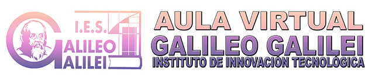

1º ESO
A
B
C
D
E
F
G
2º ESO
A
B
C
D
E
F
G
H
1ºPMAR
3º ESO
A
B
C
D
E
F
2ºPMAR
4º ESO
A
B
C
D
E
F
1º BACH
A
B
C
D
2º BACH
A
B
C
D
Pendientes
Equipo directivo
Proyecto IIT
Proyecto bilingüe
Proyecto de innovacion educativa
Equipo de mediación
Proyecto erasmus+
Formación de profesores
Departamentos:
Orientación
Economía
Dibujo
Física y química
Matemáticas
Lengua y literatura castellana
Inglés
Educación física
Ciencias naturales
Ciencias sociales
Religión
Tecnología
Francés
Filosofía
Latín
Musica